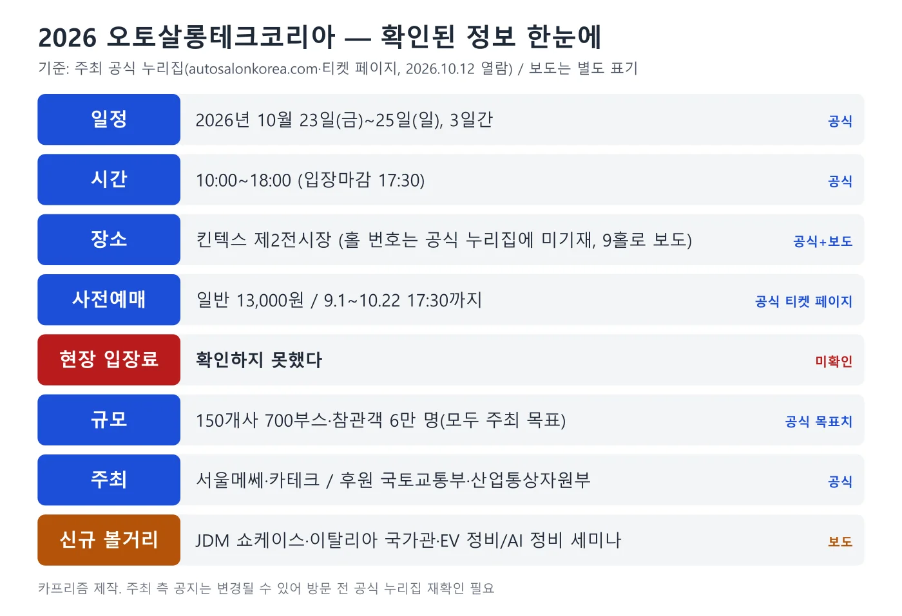
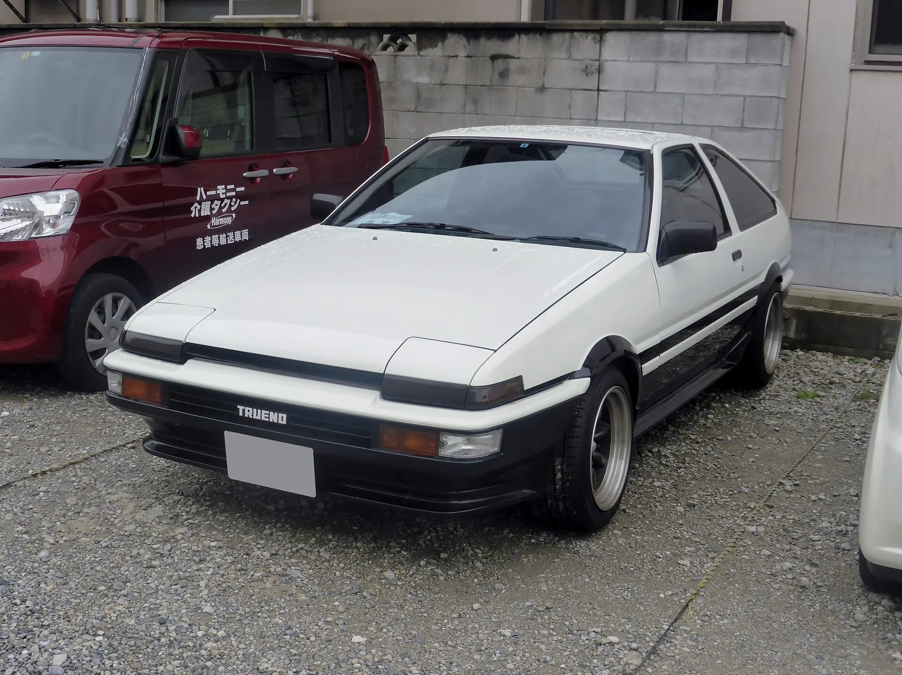
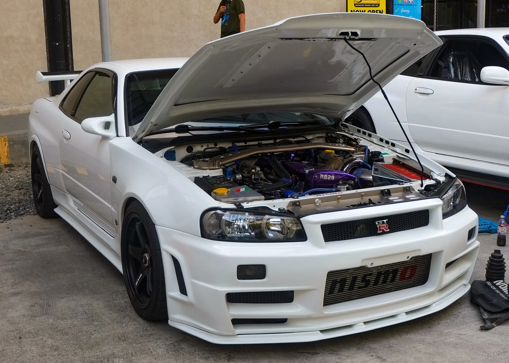
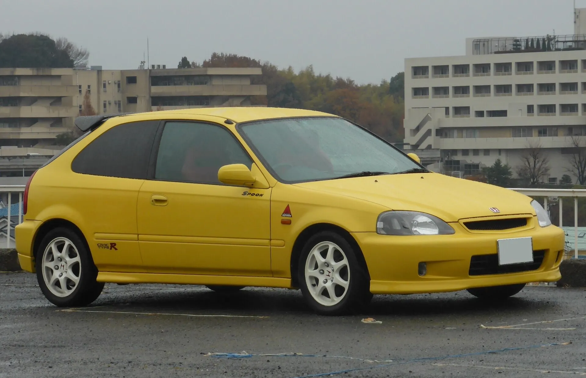
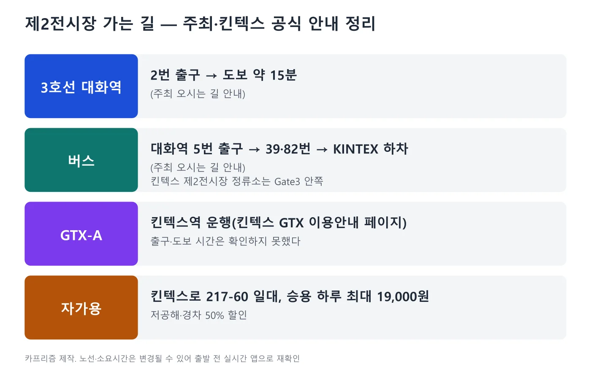
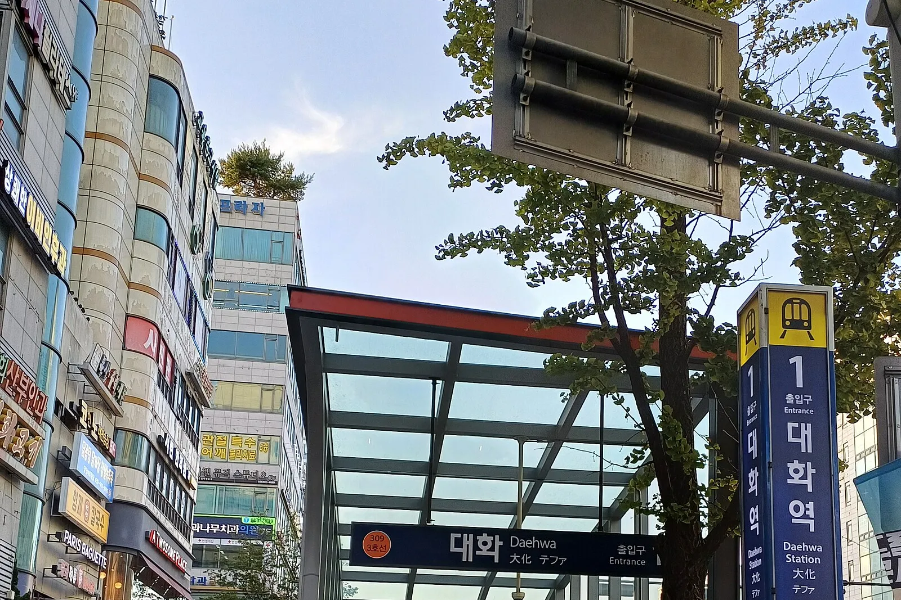
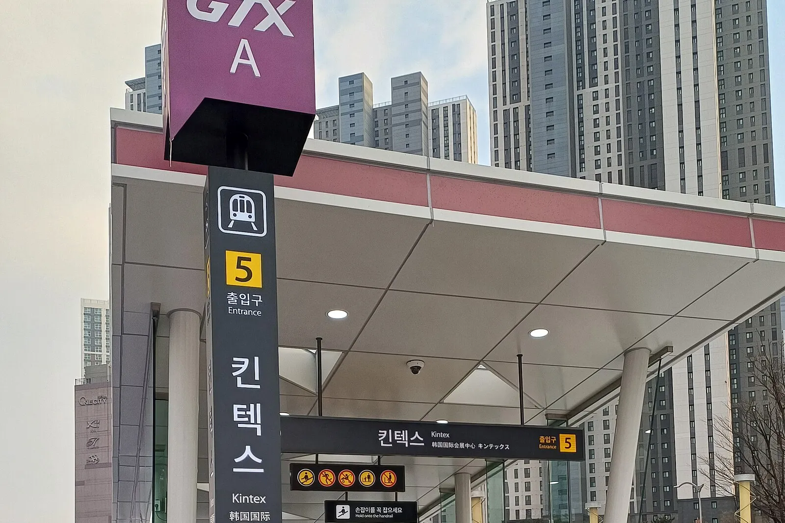
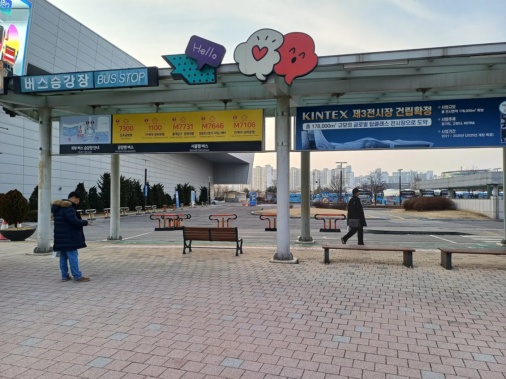
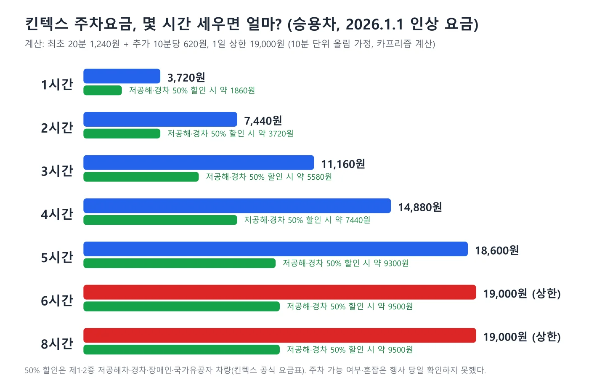

▲ 킨텍스 사옥(경기 고양시 일산서구) 외관 자료사진. 전시 홀이 아니라 사옥 건물이다 ⓒ 뭘로할까, Wikimedia Commons (CC BY-SA 4.0)
"입장권은 13,000원, 10월 22일 17시 30분까지 사전예매" — 2026 오토살롱테크코리아가 10월 23일(금)부터 25일(일)까지 3일간 킨텍스 제2전시장에서 열린다. 먼저 밝혀 둔다. 이 글은 주최 측 누리집(autosalonkorea.com)의 전시회 개요·관람 안내·오시는 길 페이지와 주최가 연결해 둔 티켓 예매 페이지, 킨텍스 공식 안내를 기준으로 삼았다. 다만 공식 누리집에는 홀 번호(제2전시장 몇 홀인지)와 현장 입장료, 세부 프로그램 시간표가 없었다. 이런 항목은 오토트리뷴·뉴스타운 보도에 기대 "~로 보도됐다"로 적었고, 확인하지 못한 것은 "확인하지 못했다"로 남겼다. 공식 누리집 내용도 주최가 바꿀 수 있으므로 방문 직전에 한 번 더 확인하는 것이 안전하다.
튜닝은 "전시장에서 보는 것"과 "내 차에 하는 것"의 규정이 전혀 다르다. 전시 차량처럼 휠·배기·외장을 바꾸고 싶다면 자동차 구조변경 합법·불법 기준 기사를, 캠핑카·카라반 코너를 보고 구조변경을 고민한다면 PV5 캠핑용자동차 구조변경 법규 기사를 먼저 읽어 두자. 이 글은 방문 일정·비용·교통과 "무엇이 확인됐고 무엇이 아직 비어 있는지"를 정리한다.
1. 확인된 기본 정보 — 공식과 보도를 나눠 보면
전시회 정보는 주최 누리집의 전시회 개요 바로가기 관람 안내 바로가기 페이지에서 확인할 수 있다. 아래 표는 출처를 구분해 정리했다.
| 항목 | 내용 | 출처 |
|---|---|---|
| 행사명 | 2026 오토살롱테크코리아(AUTO SALON TECH KOREA 2026) | 주최 공식 누리집 |
| 기간 | 2026년 10월 23일(금)~25일(일), 3일간 | 주최 공식 누리집(전시회 개요) |
| 운영시간 | 10:00~18:00, 입장마감 17:30(날짜별 차이는 안내에 없음) | 주최 공식 누리집(관람 안내) |
| 장소 | 킨텍스 제2전시장(경기 고양시 일산서구). 9홀로 보도 | 공식 누리집은 "제2전시장"까지만, 9홀은 오토트리뷴 보도 |
| 주최 | ㈜서울메쎄, ㈜카테크 | 주최 공식 누리집 |
| 후원 | 국토교통부, 산업통상자원부 | 주최 공식 누리집. 일부 전시 목록 사이트는 두 부처를 "주최"로 표기 |
| 공동주관 | 전국자동차검사정비사업조합연합회, 한국자동차기술인협회, 한국자동차튜닝협회, 한국전기차리빌딩협회 등 11개 단체 | 주최 공식 누리집 |
| 규모(목표) | 150개사 700부스, 참관객 60,000명 | 주최 공식 누리집(둘 다 "목표") |

▲ 확인된 정보와 확인하지 못한 정보를 한 장으로 정리했다. 파란색은 공식, 주황색은 보도, 빨간색은 미확인이다 ⓒ 카프리즘 제작
숫자 두 가지는 주의해서 읽어야 한다. 첫째, 공식 누리집의 "150개사 700부스·6만 명"은 결과가 아니라 목표다. 둘째, 오토트리뷴 보도(2026.10.11)는 "약 150개사 600부스 규모"로 전했다. 부스 수가 700과 600으로 엇갈린 이유는 확인하지 못했다. 참고로 이탈리아 무역공사(ICE)의 국가관 공고는 지난해(2025) 행사를 "참가 120개사, 관람객 41,813명"으로 소개했다. 올해 6만 명은 이 수치의 약 1.4배를 노리는 목표다(주최 목표 ÷ ICE 소개 수치, 카프리즘 계산).
2. 입장권 — 사전예매 13,000원, 현장 가격은 확인하지 못했다
관람 안내 페이지는 입장 절차를 두 가지로 적었다. 현장 매표소에서 입장권을 받거나, 인터넷으로 사전 구매한 뒤 사전구매자 창구에서 입장권을 받는 방식이다. "사전구매 시 입장료 할인을 받을 수 있으며 현장에서 본인 신분 확인 후 입장권을 받을 수 있다"고 안내돼 있다. 주최가 연결해 둔 티켓 사전예매 페이지 바로가기에는 일반예매 2026년 9월 1일(화)~10월 22일(목) 17:30, 13,000원이라고 적혀 있다.
| 항목 | 확인 내용 |
|---|---|
| 사전예매 가격 | 일반 13,000원(예매 페이지 표기) |
| 사전예매 기간 | 2026년 9월 1일~10월 22일 17:30 |
| 수령 | 현장에서 본인 신분 확인 후 입장권 수령(관람 안내) |
| 구분 | 예매 양식에 "일반"과 "바이어" 구분이 있다. 바이어 무료 여부는 확인하지 못했다 |
| 현장 입장료 | 확인하지 못했다. "사전구매 시 할인"이라는 문구만 있어 현장가는 알 수 없다 |
| 어린이·단체 요금 | 확인하지 못했다 |
3일권인지 1일권인지, 재입장이 되는지도 페이지에 적혀 있지 않았다. 작년 요금이나 할인 사례를 그대로 대입하지 말고, 예매 페이지의 안내와 주최 문의처(서울메쎄 070-5095-9913, info@autosalonkorea.com)에서 확인하자.
3. 무엇을 보나 — 보도된 전시 구성과 JDM 쇼케이스
전시 품목은 보도를 종합하면 자동차 애프터마켓 전반이다. 오토트리뷴(2026.10.11)는 정비·부품·차체수리 설비, 튜닝·타이어·필름·전장용품, 미래 모빌리티, 캠핑카와 카라반을 꼽았다. 뉴스타운(2026.10.6)은 전기차 정비·수리와 AI를 활용한 정비 기술을 주제로 한 세미나·콘퍼런스가 열리고, 이탈리아 참가 기업 중심의 신제품 설명회가 마련된다고 전했다. 주최 측은 업계에는 B2B 비즈니스 기회를, 일반 관람객에는 종합 페스티벌 경험을 제공하겠다고 밝힌 것으로 보도됐다.
| 구분 | 내용 | 출처 |
|---|---|---|
| 디티 | 정비 공구·솔루션, 하이퍼 스폰서십으로 참가 | 오토트리뷴·뉴스타운 |
| 셰플러코리아 | 애프터마켓 부품·솔루션 | 오토트리뷴·뉴스타운 |
| 런치테크 | 스마트 진단·정비 장비 | 오토트리뷴·뉴스타운 |
| 쓰리엠(3M) | 도장 보호 필름(PPF), 랩핑·윈도우 틴팅 필름, 연마재·광택 컴파운드 | 오토트리뷴·뉴스타운 |
| 이탈리아 국가관 | 프리미엄 부품·자동차 디자인 기술 소개, 신제품 설명회. 이탈리아 무역공사(ICE)가 같은 기간(10월 23~25일) 국가관 참가 공고를 낸 것이 확인된다 | 오토트리뷴, ICE 공고 |
| 세미나 | 전기차 정비·수리, AI 활용 정비 기술. 시간표·연사는 확인하지 못했다 | 뉴스타운·오토트리뷴 |
가장 눈에 띄는 것은 "JDM IN AUTO SALON TECH KOREA"라는 이름의 일본 내수차(JDM) 쇼케이스로, 올해 처음 꾸린다고 보도됐다. 전시 차량으로는 토요타 AE86 트레노, 리버티워크 와이드 보디키트를 얹은 닛산 스카이라인 GT-R(R32), 닛산 R34 스카이라인, 혼다 시빅 타입 R(EK9)이 거론됐다. 아래 사진은 같은 차종의 일반 사진이며 이번 행사에 실제로 전시될 개별 차량이 아니다.

▲ 쇼케이스 전시 차종으로 보도된 토요타 AE86 스프린터 트레노(3도어). 일본에서 촬영된 일반 사진으로, 행사 전시 차량이 아니다 ⓒ Tokumeigakarinoaoshima, Wikimedia Commons (CC0)

▲ 보도된 전시 차종 중 R34 스카이라인과 같은 모델. 보닛을 열어 둔 흰색 GT-R이다(일반 사진, 행사 전시 차량 아님) ⓒ Ethan Llamas, Wikimedia Commons (CC BY-SA 4.0)

▲ 쇼케이스 전시 차종으로 거론된 EK9 시빅 타입 R과 같은 모델(일반 사진, 행사 전시 차량 아님) ⓒ Tokumeigakarinoaoshima, Wikimedia Commons (CC0)
4. 방문 계획 — 어떤 관람객에게 맞는 행사인가
보도와 주최 설명을 종합하면 이 행사는 신차 공개 모터쇼가 아니라 정비·튜닝·용품 중심의 애프터마켓 전시다. 일반 관람객에게는 용품·세차·필름 시공 브랜드를 한자리에서 비교하고 튜닝카를 구경하는 자리이고, 업계 종사자에게는 부품·장비 상담의 장이다. 다만 현장에서 직접 구매·시공 상담이 얼마나 되는지, 시승·체험 코너가 있는지는 확인하지 못했다.
| 목적 | 볼 것 | 방문 전 확인 |
|---|---|---|
| 튜닝·드레스업 | 튜닝카, 휠·타이어·필름·랩핑 부스 | 내 차에 쓰려면 구조변경 승인 필요 여부는 별도. 관련 기사 참고 |
| 정비·공구 | 디티·런치테크·셰플러 등 보도된 참가사 | 현장 판매·데모 여부는 확인하지 못했다 |
| 전기차·정비 | 전기차 정비·수리, AI 정비 세미나 | 세미나 시간표·참가 방법 미확인 |
| 캠핑카·카라반 | 캠핑카·카라반 전시 코너로 보도 | 구체 참가사·전시 차량 미확인 |
| JDM 팬 | JDM 쇼케이스(AE86·R32·R34·EK9 보도) | 실제 전시 차량은 개별 확인 필요 |
튜닝 차량을 구경하다 마음에 드는 부품이 생겼다면 규정이 먼저다. 예를 들어 안개등은 올해 8월 26일부터 튜닝부품 인증제도가 시행됐고(안개등 튜닝부품 인증 기사), ECU 맵 변경으로 출력을 높이는 방식은 ECU 튜닝 규정 기사에서 따로 정리했다. 전시된 모든 제품이 도로 주행에 합법이라는 뜻은 아니다.
📍 전시장 부품을 내 차에 달기 전 질문 세 가지
① 이 부품이 튜닝 승인 대상인지, 튜닝부품 인증을 받았는지 ② 시공 업체가 승인·검사 절차를 대행하는지 ③ 보증(제조사 보증·보험)에 영향을 주는지. 세 가지를 서면이나 문자로 받아 두면 이후 분쟁이 줄어든다.
5. 가는 길 — 공식 안내 기준
주최 누리집의 오시는 길 바로가기는 주소를 "경기 고양시 일산서구 킨텍스로 217-59 제2킨텍스"로, 전화를 031-810-8114로 적었다. 킨텍스 공식 사이트의 본사 주소는 킨텍스로 217-60으로 번지가 다르게 표기돼 있으니, 내비게이션은 "킨텍스 제2전시장"으로 검색하는 편이 낫다. 교통수단별 안내는 아래와 같다.
| 수단 | 안내 내용 | 비고 |
|---|---|---|
| 지하철(3호선) | 대화역 2번 출구에서 도보 약 15분 | 주최 오시는 길 |
| 버스 | 대화역 5번 출구에서 39번·82번 이용, KINTEX 하차 | 주최 오시는 길. 킨텍스 안내에 제2전시장 정류소는 Gate3 안쪽으로 표시 |
| GTX-A | 킨텍스 공식 사이트에 GTX 이용안내가 있다 | 킨텍스역에서 제2전시장까지 도보 시간은 확인하지 못했다 |
| KTX | 서울역·용산역·행신역 등 주요 정차역 안내가 킨텍스 사이트에 있다 | 세부 환승은 킨텍스 안내 참고 |
| 자가용 | 킨텍스 제2전시장 일대 | 행사 기간 혼잡도와 만차 여부는 확인하지 못했다 |

▲ 주최·킨텍스 공식 안내를 교통수단별로 정리한 도표 ⓒ 카프리즘 제작

▲ 3호선 대화역 출입구(1번 출구). 주최 안내의 2번·5번 출구와 번호가 다르니 출구 번호는 현장 안내판으로 확인하자 ⓒ Striker9498, Wikimedia Commons (CC0)

▲ GTX-A 킨텍스역 5번 출입구. 개통 전 공사 중이던 2024년 12월에 촬영한 사진이다 ⓒ Striker9498, Wikimedia Commons (CC0)

▲ 킨텍스 전시장 앞 버스 승강장(2024년 1월 촬영). 현재 노선·위치는 다를 수 있다 ⓒ Striker9498, Wikimedia Commons (CC BY-SA 3.0)
대화역 도보 15분이라는 안내는 주최 기준이다. 쌀쌀한 10월 말에는 버스나 GTX-A를 함께 고려할 만하다. 어느 쪽이 빠른지는 실시간 길찾기 앱으로 출발 직전에 비교하는 편이 정확하다.
6. 주차요금 — 승용차 1일 최대 19,000원, 저공해차는 50% 할인
킨텍스는 2026년 1월 1일부터 주차요금을 인상했다. 공지(2025.11.28 등록)에 따르면 기본 요금은 최초 20분 1,240원, 추가 10분당 620원, 1일 상한 19,000원이다. 킨텍스 주차 요금안내 바로가기 페이지에는 25인승 이상 버스 등은 2배 요금이 적용된다고 돼 있다. 같은 페이지의 할인 대상에는 국가유공자·장애인·경차와 저공해차(제1종·제2종) 50% 할인이 있다.
| 주차 시간 | 일반 요금 | 50% 할인 대상 요금 |
|---|---|---|
| 1시간 | 3,720원 | 약 1,860원 |
| 2시간 | 7,440원 | 약 3,720원 |
| 3시간 | 11,160원 | 약 5,580원 |
| 4시간 | 14,880원 | 약 7,440원 |
| 5시간 | 18,600원 | 약 9,300원 |
| 6시간 이상 | 19,000원(1일 상한) | 약 9,500원 |

▲ 2026년 1월 인상 요금표로 계산한 시간별 주차요금(올림 방식은 가정). 실제 정산은 킨텍스 기준을 따른다 ⓒ 카프리즘 제작
관람이 3~4시간이라고 가정하면 일반 승용차는 11,000~15,000원대, 저공해차·경차는 절반 수준이다(관람 시간은 카프리즘의 가정이며 실제와 다를 수 있다). 임시주차장(T2·T3·T4)은 1일 상한 6,500원이라고 킨텍스 공지에 있으나 이번 행사 때 개방되는지는 확인하지 못했다. 전기차 충전 시설 현황도 확인하지 못했다.
7. 확인하지 못한 것 — 방문 전에 꼭 물어볼 목록
- 현장 입장료와 어린이·단체 요금, 사전구매 할인 폭
- 정확한 홀 번호: 공식 누리집은 "제2전시장", 오토트리뷴은 "9홀"로 보도
- 세미나·부대행사 시간표(공식 부대행사 페이지는 과거 연도 내용이어서 활용하지 않았다)
- 참가업체 목록·부스 배치도: 2026 최종 목록은 확인하지 못했다
- JDM 쇼케이스 실제 전시 차량: 보도에 거론된 차종 외 구체 명단
- 지난해 대비 변화: 지난해 입장료·부대행사는 이 글에서 다루지 않았다
- 행사 기간 주차·교통 혼잡도와 GTX-A 연계 이동 시간
✅ 출발 전 체크리스트
· 사전예매 — 10월 22일(목) 17:30 마감, 일반 13,000원(예매 페이지 기준)
· 운영시간 — 10:00~18:00, 입장마감 17:30. 오후 늦게 가면 관람 시간이 짧다
· 교통 — 대화역 도보 약 15분 또는 39·82번 버스, 승용차는 1시간 약 3,700원에서 시작해 1일 19,000원 상한
· 튜닝 부품 구입 — 승인·인증 여부를 먼저 확인(관련 기사 링크 참고)
· 공식 재확인 — 주최 누리집의 홀 번호·프로그램 업데이트
8. 요약
2026 오토살롱테크코리아는 2026년 10월 23일(금)~25일(일) 킨텍스 제2전시장에서 열린다(주최 공식 누리집). 운영은 매일 10:00~18:00(입장마감 17:30), 사전예매는 일반 13,000원으로 10월 22일 17:30까지다. 150개사 700부스·6만 명은 목표치이고, 보도에는 JDM 쇼케이스·이탈리아 국가관·전기차·AI 정비 세미나가 올해 볼거리로 나온다. 승용 주차는 1일 최대 19,000원이다.
현장 입장료, 홀 번호(9홀은 보도), 세미나 시간표, 실제 전시 차량 목록은 확인하지 못했다. 사진 속 JDM 차량은 같은 차종의 일반 사진이며 행사 전시 차량이 아니다. 방문 전 주최 누리집에서 재확인하자.